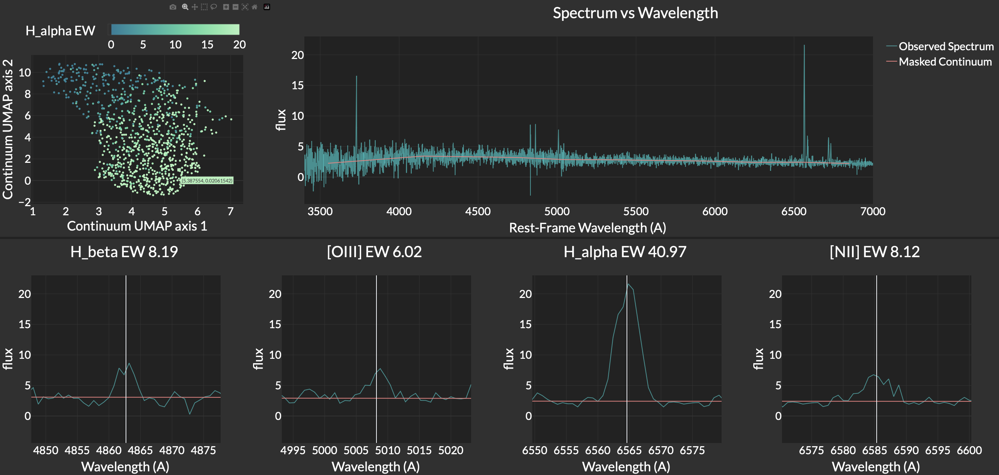

Hello! I'm a 4th year PhD Student
at the University of Pittsburgh
I use Machine Learning and AI to understand the Universe
List of Publications
Research
I am interested in applying machine learning (neural networks, CNNs, contrastive learning, normalizing flows, transfer learning)
to large astronomical datasets.
A key ingredient to studying cosmology and galaxy evolution is knowing distances to galaxies, which is the primary focus of my research.
I am part of the Dark Energy Spectroscopic Instrument (DESI) Collaboration,
and the Legacy Survey of Space and Time Dark Energy Science Collaboration (LSST DESC).
Currently I am working on:
- predicting the emission lines of galaxies from their stellar continua with a JAX-implemented Multi-Layer Perceptron trained on DESI data;
- and using deep neural networks to compress images of galaxies into a low-dimensional space and perform downstream tasks on this space, such as photo-z prediction, outlier detection, and classification.
Mapping Emission Lines to Continua
Published in MNRAS
In this project, we trained a JAX-implemented neural network on
DESI early data release to predict the strengths of emission lines of galaxies from their stellar continua.
Most of the light from galaxies comes from stars, which produce a smooth spectrum,
and from gas, which emit a lot of light at specific wavelengths, called emission lines.
This project shows that these two sources are strongly correlated.
This is not surprising - emission lines are produced when the gas is ionized by the light emitted from the stars.
Also, the starlight holds information on the history of star formation of the galaxy, which is what determines
the content of the gas.

The top-left panel in the figure shows a 2D projection of the starlight (using UMAP), with 1,000 galaxies being represented as scatter points
color-coded with the strength of the strongest emission line, H-alpha. There is a clear trend from weak to strong H-alpha emission.
The galaxies with strong H-alpha emission are the ones with the youngest stars (which have blue continua),
and the galaxies with weak H-alpha emission are the ones with the oldest stars (which have red continua).
The top-right panel shows the spectrum of a particular galaxy, and the bottom four panels show some of its emission lines.
This galaxy has a blue spectrum (the flux is strongest at shorter wavelengths), and it also has strong emission lines.
You can checkout an interactive version of this plot at this link (it might take some time to load).
By hovering over the points in the scatter plot of the top-left panel, you will find that galaxies
with a red spectrum (more flux at longer wavelengths) will have weak emission lines.
Deep Learning Photometric Redshifts with Space-based Images
Talk at AstroAI 2024
This project aims to improve distance (redshift) estimates of far-away galaxies (up to redshift ~ 2)
by leveraging pixel-level information from space-based images. For nearby galaxies, it has been shown that
the shape of the galaxy can improve distance estimates. This should also be true for galaxies that are further away,
but high-resolution images from space telescopes are required.
To test this, we have used contrastive learning (a machine learning method that uses deep neural networks) on Hubble Space Telescope (HST) images
in the CANDELS fields
to compress them into a low-dimensional space. In this space, galaxies which have similar shapes (up to rotation) and colors will
be close to each other.
 In the figure above, we show as an example 1 galaxy (left column) and its 5 nearest neighbors
(columns 2-6) in the low-dimensional space. The rows correspond to different HST imaging filters (wavelengths).
The neighbors have similar shapes to the original galaxy, and also have similar relative fluxes in the different filters.
In the figure above, we show as an example 1 galaxy (left column) and its 5 nearest neighbors
(columns 2-6) in the low-dimensional space. The rows correspond to different HST imaging filters (wavelengths).
The neighbors have similar shapes to the original galaxy, and also have similar relative fluxes in the different filters.
After obtaining a low-dimensional representation, we trained a different neural network to predict distances from it.
We saw minor improvements in performance, but we think we can do better by using transfer learning (with ground-based images) and
a more sophisticated neural network architecture, so stay tuned!
About Me
I am Lebanese-Armenian born and raised in the beautiful country of Lebanon. I enjoy rock climbing, playing football (soccer), and photography. I love exploring new places.
Contact
My email is ask126@pitt.edu.